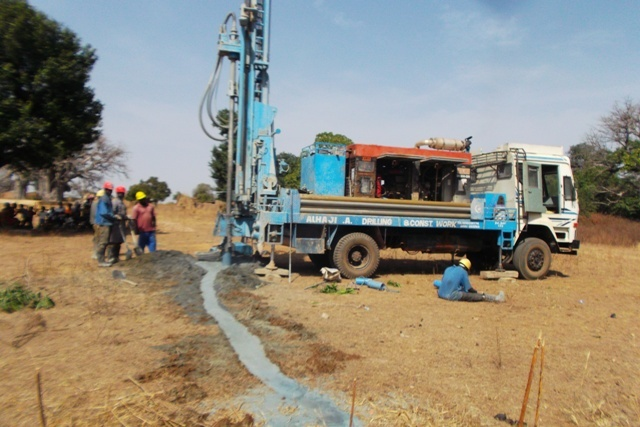
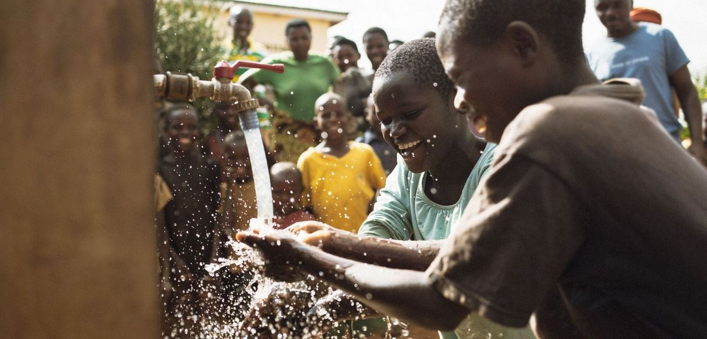
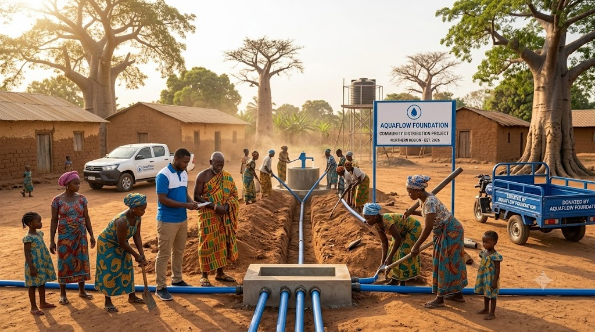
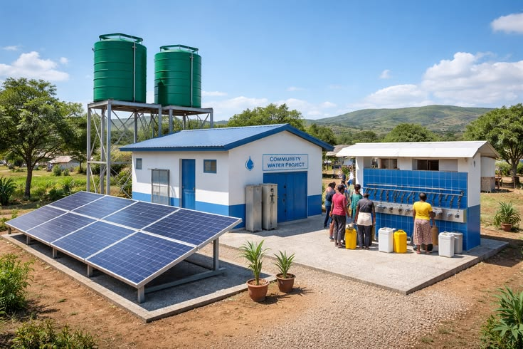
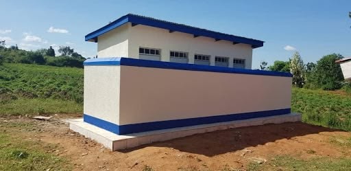
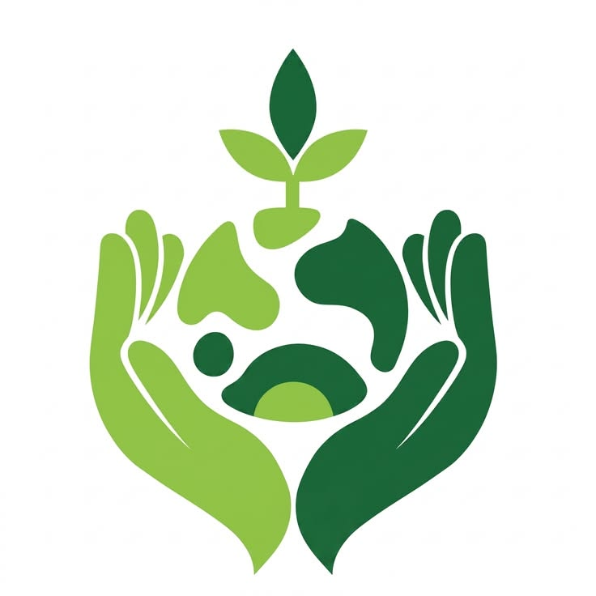
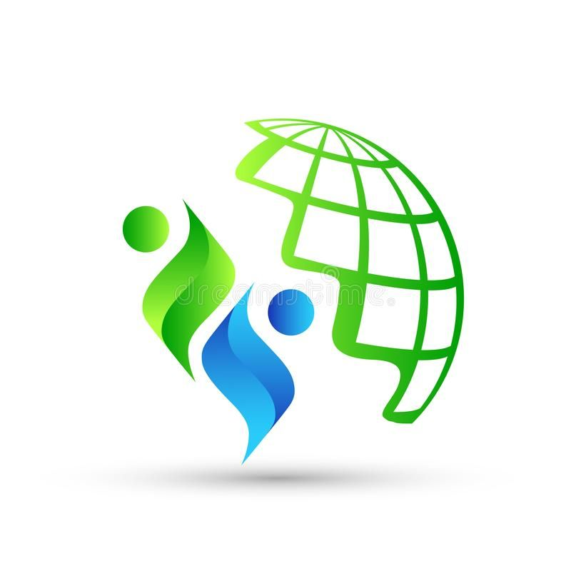
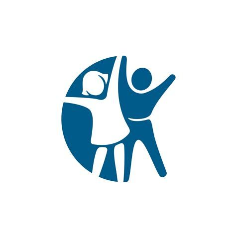

Northern Region
Borehole for Life — Yendi
A mechanized borehole now serves over 1,200 residents with reliable, year-round clean water.
Completed & operationalAquaFlow Foundation brings safe drinking water and dignified sanitation to underserved communities across Ghana — built to last, and owned by the people who use them.


Founded in Ghana, AquaFlow Foundation partners directly with rural and peri-urban communities to design water and sanitation solutions that fit local needs — not one-size-fits-all fixes. Every borehole, well, and hygiene program is built with community ownership at its core, so the impact outlasts our involvement.
A look at some of the initiatives currently changing how communities access clean water and sanitation.

A mechanized borehole now serves over 1,200 residents with reliable, year-round clean water.
Completed & operational
Rehabilitated a contaminated water source and built a community filtration station.
Ongoing maintenance
Gender-separated toilet facilities built at four primary schools, improving attendance and health.
CompletedBefore AquaFlow came to Yendi, we walked two hours for clean water. Now it's steps away from home.
Our children no longer miss school because of waterborne illness. The new facilities changed everything.

Ghana WASH Alliance
Global Water Trust
Ashanti Development Network